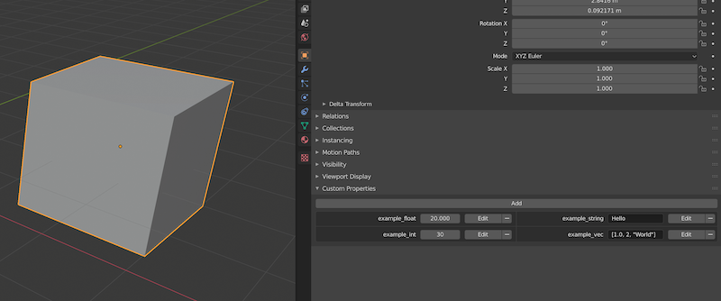

Custom Properties
landon exports all custom properties found on a mesh.
These can be useful when your application code wants to treat certain meshes differently based on certain properties that you label the mesh with in Blender.
For example - you might have a linter that ensures that none of your meshes go above 200 vertices in order to preserve your low poly art style.
There might be some exceptions to this rule - so your code might check for the override_max_vertex_count
custom property to enforce a different limit in special cases.
In Blender custom properties these can be added in the Object section of the Context panel.

Int, Float, String and Vector custom properties are exported. Type information can be found next to every value since the Rust API uses this to generate a type safe data structure.
Dictionaries are not currently supported - but feel free to open an issue if you need this.
Rust API
BlenderMesh.custom_properties Rust API
Example JSON Representation
Accurate as of May 31, 2020
"custom_properties": {
"example_float": {
"Float": 20.0
},
"example_int": {
"Int": 30
},
"example_string": {
"String": "Hello"
},
"example_vec": {
"Vec": [
{"Float": 1.0},
{"Int": 2},
{"String": "World"}
]
}
}